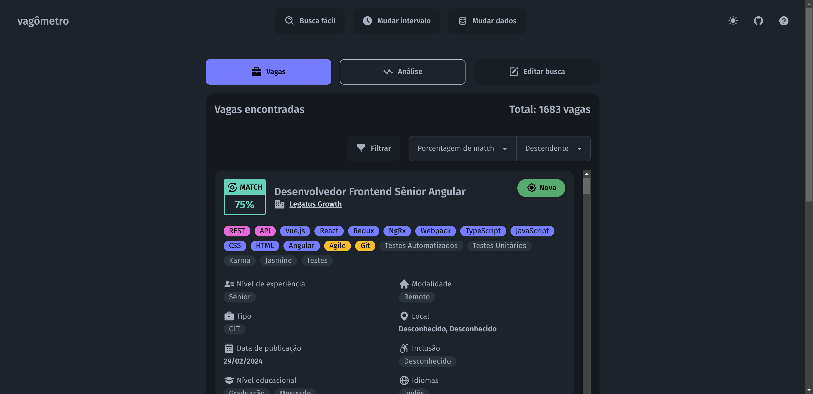
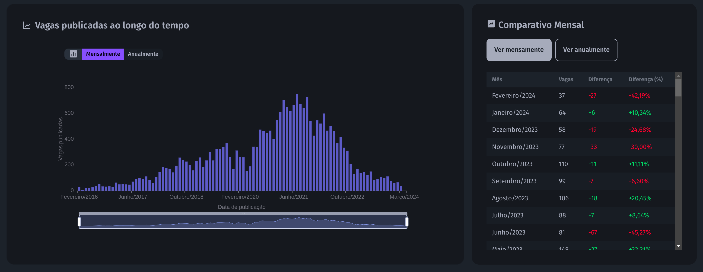
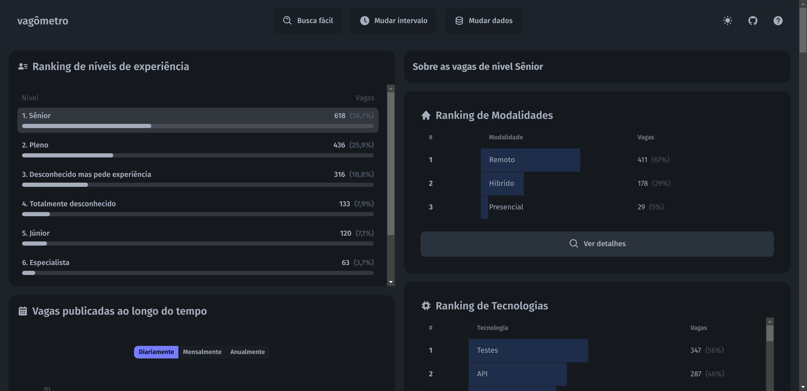
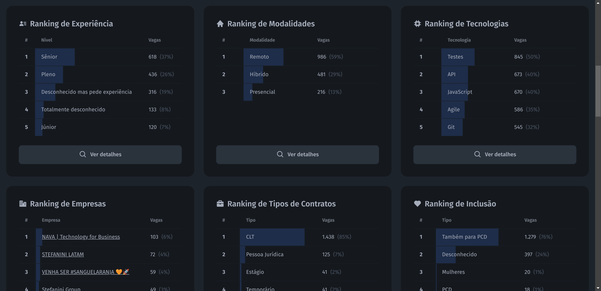

Seu rastreador de vagas pra TI no Brasil
Descubra diariamente quais vagas estão sendo publicadas, quais delas dão match com você, quais as tecnologias mais requisitadas e muito mais
Open-source
Vagas do LinkedIn, Gupy e GitHub
Atualizações diárias
Busca automática de vagas
Defina parâmetros do seu interesse e veja quais vagas dão match com você!

Vagas por dia, mês e ano
Veja quantas vagas foram publicadas por dia, mês e ano e visualize as oscilações do mercado de vagas.

Mapeamento de palavras-chave
Toda vaga tem seu conteúdo mapeado por palavras-chave para facilitar a busca de vagas de interesse do usuário.

Rankeamento de informações
Veja quais tecnologias são mais requisitadas, quais cidades possuem mais vagas e diversas outras informações.
